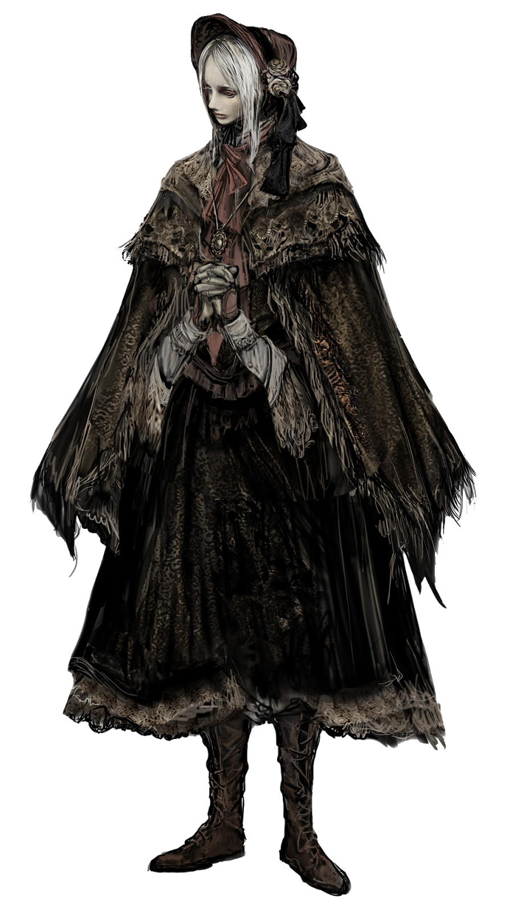

Энциклопедия Боссов Bloodborne
Полный список всех противников, встречающихся на пути охотника
Всего боссов: 0
🎮 Боссы не найдены. Попробуйте другой фильтр.
🔄 Загрузка...
Основная игра. Обязательные боссы
| Английское название |
Русское название |
Локация |
 Father Gascoigne Father Gascoigne |
Отец Гаскойн |
Центральный Ярнам |
| Vicar Amelia |
Викарий Амелия |
Соборный округ |
| Shadow of Yharnam |
Тень Ярнама |
Запретный лес |
| Rom |
Ром, праздный паук |
Бюргенверт |
| Reborn |
Возродившийся |
Яаар'гул, духовная деревня |
| Micolash |
Миколаш, Хозяин кошмара |
Кошмар Менсиса |
| Wet Nurse |
Кормилица Мерго |
Кошмар Менсиса |
Основная игра. Второстепенные боссы
| Английское название |
Русское название |
Локация |
| Cleric Beast |
Церковное Чудовище |
Центральный Ярнам |
| Emissary |
Посланник Небес |
Верхний Соборный округ |
| Ebrietas |
Ибраитас, дочь Космоса |
Верхний Соборный округ |
| Blood-starved Beast |
Чудовище-кровоглот |
Старый Ярнам |
| Paarl |
Черное чудовище Паарл |
Яаар'гул, духовная деревня |
| Witch of Hemwick |
Ведьма Хемвика |
Молельный переулок Хемвик |
| Martyr Logarius |
Мученик Логариус |
Покинутый замок Кейнхёрст |
| Amygdala |
Амигдала |
Граница кошмара |
| Gehrman |
Герман, первый охотник |
Сон охотника |
| Moon Presence |
Присутствие луны |
Сон охотника |
Дополнение The Old Hunters
| Английское название |
Русское название |
Локация |
| Ludwig |
Людвиг |
Кошмар охотника |
| Laurence |
Лоуренс, первый викарий |
Кошмар охотника |
| Living Failures |
Живые неудачи |
Зал исследований |
| Maria |
Леди Мария из Астральной часовой башни |
Зал исследований |
| Orphan of Kos |
Сирота Кос |
Рыбацкая деревня |
Подземелье чаши - Область Птумеру
| Босс |
Локация в чашах |
| Мертвый гигант |
Чаша Птумеру, Нижняя Чаша Птумеру, Чаша Дальней Гробницы |
| Беспощадные Хранители |
Чаша Птумеру, Нижняя Чаша Птумеру |
| Сторожевой пес Древних Богов |
Чаша Птумеру, Проклятая и оскверненная Чаша |
| Душа, одержимая чудовищем |
Центральная Чаша Птумеру, Чаша Больного Лорана |
| Хранитель Древних Богов |
Центральная Чаша Птумеру, Проклятая и оскверненная Чаша |
| Потомок птумериан |
Центральная Чаша Птумеру, Великая Чаша Птумеру Айилл |
| Ром, праздный паук |
Нижняя Чаша Птумеру |
| Чудовище-кровопуск |
Нижняя Чаша Птумеру, Великая Чаша Птумеру Айилл |
| Амигдала |
Проклятая и оскверненная Чаша |
| Ярнам, Птумерианская королева |
Великая Чаша Птумеру Айилл |
Подземелье чаши - Область дальних гробниц
| Босс |
Локация в чашах |
| Вепрь-людоед |
Чаша Дальней Гробницы |
| Чудовище-кровоглот |
Чаша Дальней Гробницы, Чаша Больного Лорана |
| Мозгосос |
Нижняя Чаша Дальней Гробницы, Чаша Великого Исза |
| Забытый безумец |
Нижняя Чаша Дальней Гробницы |
| Птумерианский Старейшина |
Нижняя Чаша Дальней Гробницы |
Подземелье чаши - Область Лорана
| Босс |
Локация в чашах |
| Чудовище-кровоглот |
Чаша Больного Лорана |
| Отвратительное чудовище |
Чаша Больного Лорана, Чаша Нижнего Лорана |
| Серебряное чудовище Лорана |
Чаша Нижнего Лорана, Чаша Больного Лорана |
| Черное чудовище Лорана |
Чаша Нижнего Лорана |
Подземелье чаши - Область Исза
| Босс |
Локация в чашах |
| Мозгосос |
Нижняя Чаша Дальней Гробницы, Чаша Великого Исза |
| Посланник Небес |
Чаша Великого Исза |
| Ибраитас, дочь Космоса |
Чаша Великого Исза |
